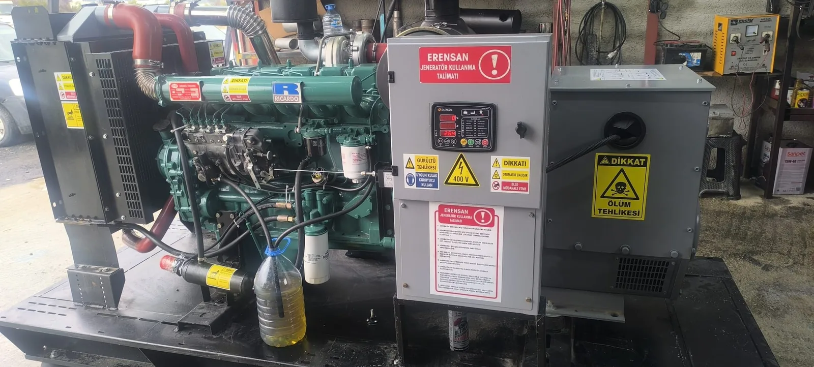

Mersin’deki makine, gıda, soğuk zincir, paketleme ve lojistik tesislerinde şebeke kesintisi; üretim kaybı, bozulan stok, duran vinç veya güvenlik sisteminin kapanması anlamına gelebilir. Planın amacı “bir jeneratör koymak” değil, kabul edilebilir kesinti süresinde doğru yüklerin kontrollü biçimde beslenmesidir. Yasal yükümlülükler sektöre ve tesise göre değişir; bu yazı genel bir işletme çerçevesi sunar, resmi belge yerine geçmez.
1. Kesintide Ne Korunacak, Ne Duracak?
İlk iş, yükleri üç gruba ayırmaktır:
- Güvenlik: Acil aydınlatma, yangın pompaları (proje kapsamındaysa), tahliye, kritik haberleşme
- Proses ve varlık: Soğutma, fırın kontrolü, PLC, sunucu, paketleme hattının kontrollü duruşu
- Ertelebilir: Konfor kliması, idari ofis, aynı anda çalışması şart olmayan yardımcı makineler
Bütün motorları aynı anda kalkındırmak çoğu jeneratörü boğar. Kalkış sırası ve yük atma (gerekirse) proje ve işletme talimatında yazılmalıdır. Kapasite hesabı için sanayi tesisi kVA hesabı ve Mersin makine sanayi jeneratör seçimi yazılarını kullanın.
2. Kabul Edilebilir Kesinti Süresi
PLC ve ağ cihazları milisaniye; asansör ve pompa saniyeler; bazı üretim hatları dakikalar mertebesinde etkilenebilir. Jeneratör + açık geçişli ATS, şebekenin kaybı ile yükün aktarılması arasında kısa bir kesinti bırakır. Bu süreyi köprülemek için uygun UPS ayrı planlanır. ATS ve UPS farkı için otomatik transfer panosu rehberine bakın.
3. Cihaz, Pano ve Yerleşim Tek Paket
Jeneratör gücü, transfer panosu, kablo kesiti, topraklama, egzoz, yanma havası ve yakıt deposu aynı projenin parçalarıdır. Kabin yerleşimi yangın yolu, forklift geçişi ve servis kapısını kapatmamalıdır. Satın alma kapsamını Mersin jeneratör satış sayfasından; geçici üretim veya arıza dönemi için kiralama seçeneğini ayrıca değerlendirin.
4. Yakıt Süresi ve İkmal Sorumlusu
Depo, “en uzun beklenen kesinti + ikmal gecikmesi” kadar düşünülmelidir. Tüketim, yük oranına göre değişir; katalog L/saat değerini körlemesine çarpmayın. Ayrıntı dizel jeneratör yakıt tüketimi yazısındadır. Planda şunlar yazılı olmalıdır: kim ikmal yapar, gece/hafta sonu ulaşılır mı, dökülme ve yangın müdahalesi nedir, yakıt yaşlanması nasıl izlenir.
5. İnsan ve İletişim
Kesinti anında tek kişi “jeneratörü çalıştırır” varsayımı kırılgandır. Vardiya amiri, bakım, güvenlik ve varsa üretim duruş prosedürü net olmalıdır. Otomatik sistemde bile acil stop, manuel geçiş ve “çalışmadıysa kime haber verilir” listesi asılı durmalıdır. Servis için marka-model, alarm kodu ve pano fotoğrafı hazır tutulur; teknik servis hattı plana işlenir.
6. Test, Bakım ve Kayıt
Boşta çalıştırmak, yükün gerçekten aktarıldığını kanıtlamaz. Planlı testte start, transfer, gerilim-frekans, geri dönüş ve soğuma izlenir. Test saati üretimi en az etkileyen pencereye konur; sonuç tarih ve imzayla kaydedilir. Akü zayıfsa plan kâğıtta kalır; jeneratör aküsü rehberi ve bakım periyodu bu takvime bağlanır.
| Plan maddesi | Belgede durması gereken bilgi |
|---|---|
| Kritik yük listesi | Cihaz, güç, faz, öncelik, kalkış notu |
| Hedef süre | UPS köprüsü ve ATS geçiş varsayımı |
| Yakıt | Depo, ikmal sorumlusu, tahmini çalışma saati |
| Test | Sıklık, yüklü/yüksüz, kayıt yeri |
| Servis | Telefon, yedek cihaz veya kiralama seçeneği |
7. Satın Alma, İkinci Cihaz veya Kiralama
Tek jeneratör, bakım veya arıza gününde tesisi açıkta bırakır. Kritik proseslerde yedek cihaz, bypass veya anlaşmalı kiralık stok düşünülür. Kısa süreli kapasite artışı veya onarım döneminde kiralama, kalıcı yedekte satış daha sık doğru çözümdür. Karar ölçütleri satın almak mı kiralamak mı yazısında özetlenir.
Uygulanabilir 8 Adım
- Tek hat şeması ve ana pano fotoğrafını toplayın.
- Güvenlik ve proses yüklerini etiketleyin; ertelebilir yükleri ayırın.
- En büyük motorların kalkış yöntemini yazın.
- UPS gerektiren noktaları işaretleyin.
- Jeneratör + ATS + kablo + egzoz yerleşimini yetkin projeyle netleştirin.
- Yakıt ve ikmal prosedürünü imzalayın.
- Test takvimi ve bakım kaydını başlatın.
- Servis ve yedekleme iletişimini vardiya dolabına asın.
Plan, cihaz kataloğunun kopyası değildir. Kesinti gününde vardiyanın eline tutuşturulacak kısa bir talimat da eklenmelidir.
Sık Sorulanlar
Bütün fabrikayı jeneratöre bağlamak zorunda mıyım?
Hayır. Çoğu tesiste güvenlik ve seçilmiş proses yeterlidir. Her şeyi bağlamak daha büyük cihaz, daha fazla yakıt ve daha karmaşık pano demektir.
Planı kim hazırlamalı?
Yük ve elektrik tarafı yetkin elektrik proje ekibiyle; jeneratör, yakıt ve bakım işletme/bakım ekibiyle birlikte yürür. Tek bir satış teklifi, acil enerji planının yerini tutmaz.
Mersin’de saha farkı var mı?
Sıcaklık, nem, toz ve liman-sanayi erişimi yakıt, soğutma ve servis süresini etkiler. Cihaz seçiminde ortam ve yol bilgisi paylaşılmalıdır.
Firma ve teklif kapsamı karşılaştırması için Mersin jeneratör firmaları sanayi rehberine bakabilirsiniz. Erensan, Toroslar merkezinden satış, kiralama, kurulum desteği ve servisi aynı ihtiyaç dosyası üzerinden değerlendirir.